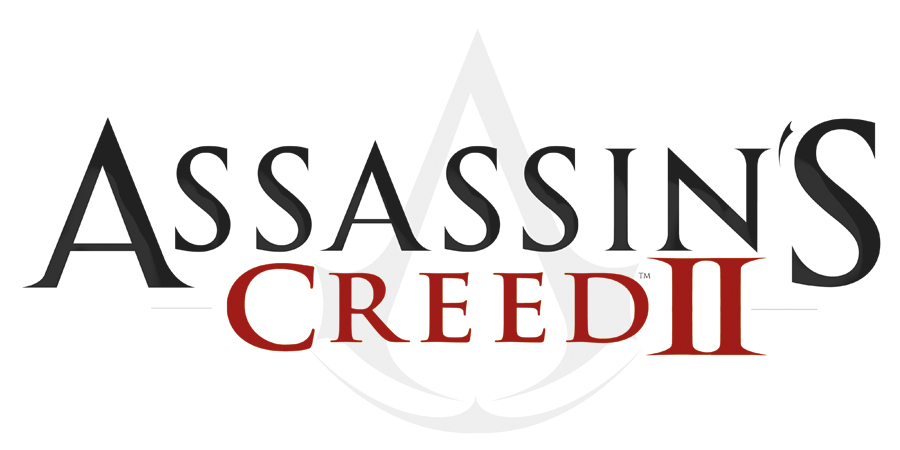

TITOLO: Assassin's Creed II
SVILUPPO: Ubisoft Montreal
DATA DI USCITA: 17 novembre 2009 (PS3 e Xbox360), 16 marzo 2010(PC)
COLLOCAMENTO STORICO: Rinascimento Italiano
AMBIENTAZIONI: Venezia, Firenze, MonteRiggioni, San Gimignano, Forlì
TRAMA:
Mentre Desmond contempla l'evanescente messaggio lasciato dal Soggetto 16 nella sua cella, Lucy entra e gli ordina di rientrare nell'Animus. Qui il protagonista assiste alla nascita di un bambino, Ezio, nell'Italia del Rinascimento, prima di essere estromesso bruscamente. I due fuggono dall'edificio dell'Abstergo e si rifugiano in un nascondiglio segreto dove li attendono due membri della confraternita degli Assassini: lo storico Shaun Hastings e l'esperta di computer Rebecca Crane. Lucy ritiene che i Templari non siano l'unica minaccia per l'umanità e che la chiave per svelare la verità sia un giovane nobile fiorentino.
Lucy pensa anche che immergersi nella vita del suo antenato, possa avere un benefico effetto collaterale, grazie all'osmosi, tale per cui Desmond acquisisca le abilità di Ezio, rivivendo la sua vita.
L'Ezio Auditore che Desmond incontra nell'Animus è uno scapestrato diciassettenne dedito ai divertimenti, con alcune rivalità con un certo Vieri de' Pazzi. Una sera, dopo una scazzottata con quest'ultimo, quando torna a casa il padre Giovanni gli dà alcune lettere che dovrà spedire. Il giorno dopo però i suoi fratelli Petruccio e Federico e suo padre Giovanni vengono arrestati e condotti al Palazzo della Signoria. Ezio si arrampica così fino alla cella dei parenti e Giovanni gli affida dei documenti che dovrà consegnare a Uberto Alberti. Ezio vi si reca, dandogli le prove dell'innocenza dei famigliari. Il padre e i suoi due fratelli vengono comunque giustiziati dallo stesso Alberti, che ha distrutto le prove che incastravano i veri responsabili. Sfuggito alla cattura, Ezio è costretto a nascondersi. Riceve aiuto e assistenza da Paola, la tenutaria di un bordello fiorentino che parteggia per la sua causa. Il ragazzo decide di vendicarsi uccidendo brutalmente Alberti a una mostra d'arte del Verrocchio, per poi portare madre e sorella in salvo a Villa Auditore, presso Monteriggioni, dove rincontrerà lo zio Mario Auditore.
Mentre anch'egli vi soggiorna per apprendere nuove tecniche di combattimento da suo zio Mario, Ezio scopre che Uberto Alberti non agiva da solo: la cospirazione era stata ordita dalla famiglia de' Pazzi, da sempre avversa agli Auditore. Ezio apprende inoltre che suo padre non era solamente un banchiere presso la banca Medici e consigliere di Lorenzo de Medici, ma era anche un membro della confraternita degli Assassini. I Pazzi, invece, appartengono al segretissimo ordine dei Templari, nemici giurati della confraternita. Ezio inizia a uccidere i Pazzi uno a uno, affinando le proprie capacità grazie a Mario e a un misterioso uomo noto come la Volpe e comprende che il padre aveva scoperto qualcosa di ben più grave di un semplice complotto politico. Sia la confraternita che i Templari sembrano alla ricerca dei pezzi del misterioso Codex, un libro-mosaico che, una volta ricomposto e attivato tramite un antico manufatto, fornirebbe la chiave di un potente segreto.
Intanto Ezio uccide per primo Vieri, poi il padre Francesco e i tirapiedi dei Pazzi: Stefano da Bagnone, Francesco Salviati, Antonio Maffei e Bernardo Baroncelli. Infine insegue il loro capo Jacopo de' Pazzi, all'incontro con Emilio Barbarigo e del Gran Maestro dei Templari, Rodrigo Borgia. I due feriscono però Jacopo che viene finito da Ezio. Insieme all'amico Leonardo Da Vinci, Ezio si dirige a Venezia.
A questo punto Desmond ha acquisito l'agilità e la forza fisica da Ezio anche se manifesta una serie di disturbi allucinatori (dovuti all'effetto osmosi): apparentemente si tratta di brevi visioni di cavalieri e guardie, per poi evolversi in frammenti della vita di Altaïr, testimone del fatto che l'osmosi può avere conseguenze devastanti. Si trova a vivere una sorta di lungo "flashback" in cui vede Altaïr inseguire una figura sconosciuta, che in seguito si rivelerà Maria (un agente Templare risparmiata dall'Assassino verso la fine del primo gioco). L'inseguimento finisce con la coppia che ha un rapporto sessuale in cima ad una torre. Infine il ricordo diventa del figlio di Altaïr e Maria, appena concepito.
Giunto a Venezia per rintracciare gli uomini elencati in una lista redatta dal padre, Ezio scopre che costoro sono tutti Templari. Li assassina uno dopo l'altro (Emilio Barbarigo, Carlo Grimaldi, Marco Barbarigo, Silvio Barbarigo e Dante Moro), recuperando così diverse pagine del Codice. Comprende che il capo, Rodrigo Borgia ("Lo Spagnolo"), sta cercando di localizzare una cripta nascosta, dove è celato un potere oscuro e incommensurabile. I Templari intendono impiegarlo per assicurarsi il dominio sull'Italia. Per aprire la cripta occorre essere in possesso di due "frutti dell'Eden", antichi manufatti che permettono a chi li controlla di compiere azioni incredibili. Mentre si adopera per sottrarne uno al Borgia, Ezio scopre con sommo stupore che diversi amici incontrati durante i suoi viaggi in Italia (tra cui Mario Auditore, Paola, la Volpe, Teodora, Bartolomeo e Antonio) sono membri della confraternita. A rivelare tutto ciò, oltre ai suoi amici, è Niccolò Machiavelli, il quale si rivela anch'egli un membro della confraternita degli Assassini. Inoltre si apprende che il ruolo di Ezio in questa serie di eventi è stato preannunciato da un'antica profezia.
Una volta ritrovate tutte le pagine del Codice, Ezio attiva la Mela di fronte alla Parete del Codice, scoprendo che lui è il Profeta e che il mosaico raffigura la mappa mondiale proprio come quella di oggi. Essa conduce Ezio a Roma nello Stato Pontificio, dove sfida Rodrigo Borgia, che nel frattempo è diventato papa (Papa Alessandro VI) ed è in possesso del secondo Frutto dell'Eden, un bastone più potente della stessa Mela dell'Eden. I due si affrontano nella Cappella Sistina per stabilire chi accederà alla cripta segreta sottostante. Il Templare, apparentemente uscito vincitore dallo scontro, scopre con rabbia che la stanza segreta non gli apre le sue porte. L'indomito Ezio, pur gravemente ferito, lo affronta di nuovo. Dopo averlo fatto crollare a terra, l'assassino gli dice che il vero Profeta in realtà era lui e il Borgia racconta che ormai non ha più nessuna voglia di vivere, ma Ezio gli risparmia la vita, seguendo il Credo degli Assassini.
Ezio apre la cripta e incontra la proiezione olografica di una donna che si presenta come la dea Minerva. Vi trova inoltre gli spiriti incorporei di Giunone e Giove.
«Chi sei?» Ezio Auditore.
«Ho molti nomi. Quando morì era Minerva. Prima Merva e Mera e così via. E anche gli altri. Giunone, un tempo chiamata Uni. E Giove un tempo chiamato Tinia.» Minerva
«Voi siete.... gli dei!?»
«Ahah! No. Non dei. Siamo solo venuti.. prima! Anche mentre camminavamo sulla terra, la tua razza cercava di comprenderci. Eravamo, più avanti nel tempo. Le vostre menti non erano pronte. E non lo sono ora, forse mai. Non importa! Forse non comprenderete noi, ma comprenderete il nostro monito» Minerva rivolta a Desmond attraverso Ezio.
Ella si rivolge direttamente a Desmond. Minerva gli racconta (identificandolo come il vero Profeta) di appartenere ad una razza terrestre senziente presente sulla terra ben prima dell'entrata in scena dell'uomo e racconta come la razza umana sia stata creata appositamente per servire la sua razza. Benché la razza di Minerva fosse più progredita e più forte, gli uomini erano più numerosi. Successivamente, le due razze si misero a combattere fra loro. Concentrati com'erano sulla guerra non prestarono attenzione a ciò che stava accadendo nel cielo e la guerra venne interrotta da una catastrofe naturale provocata da una devastante eruzione solare, la quale mise a rischio di estinzione entrambe le razze. Successivamente a tale cataclisma, le due razze si accordarono per ricostruire la civiltà. Minerva, infine, avverte Desmond che la catastrofe accaduta migliaia di anni fa, si verificherà nuovamente in futuro. A tal proposito ella afferma che il suo popolo aveva cercato un modo per prevenirlo e che il frutto dei loro sforzi giace celato in vari luoghi del pianeta (chiamati "templi"). Compito di Desmond (e dell'odierna confraternita) è quello di visitare tali templi e portare a termine le ricerche sul modo di prevenire il futuro disastro.
Desmond, infine, esce dall'Animus per scoprire che i Templari, guidati da Warren Vidic, sono giunti al nascondiglio per catturarli. Facendo sfoggio delle sue straordinarie abilità, Desmond combatte a fianco di Lucy per respingere l'attacco. Quando Vidic si ritira, gli Assassini si danno alla fuga.
ARMI:
Armi ad una mano: sono le armi principali del gioco, nonché quelle più bilanciate in termini di potenza e maneggevolezza. Sono la scelta più indicata contro quasi tutti i tipi di guardie, nonché un ottimo modo per tenere a distanza coloro che tentano la tattica dell'accerchiamento. Tra di esse figurano spade (le più utilizzate dai nemici) di varia foggia, mazze, magli, asce, rastrelli e scope (queste ultime due prese da contadini e spazzini).
Armi a due mani: non sono direttamente equipaggiabili ma vanno sottratte alle guardie più corpulente (uccidendole o disarmandole); pur essendo estremamente potenti, data la loro mole sono difficili da maneggiare e sfruttare per un contrattacco. Comprendono spadoni, alabarde, lance e alcuni oggetti di fortuna tra cui forconi e ramazze.
Ferri corti: a causa delle dimensioni ridotte, queste armi sono l'ideale per contrattacchi rapidi e letali contro piccoli gruppi di guardie; sono però sconsigliati in caso di un massiccio accerchiamento, dato che offrono poca difesa e al di fuori dei contrattacchi la loro potenza è piuttosto bassa. Tra di essi vi sono pugnali e coltelli di varie dimensioni e forme.
Lama celata: è il simbolo di ogni Assassino, nonché il suo più fido alleato e il modo migliore per uccidere qualcuno silenziosamente e di sorpresa. Dopo essere stata modificata da Altaïr stesso, la lama celata non richiede più l'amputazione dell'anulare per essere estratta. Recuperando varie pagine del Codice degli Assassini, Leonardo da Vinci sarà in grado di crearne un'aggiuntiva, permettendo di colpire più bersagli simultaneamente e di aggiungervi una piccola placca metallica sulla polsiera per poter deviare gli attacchi nemici. La Doppia Lama Celata sarà infine composta da: due lame avvelenate, una per polsiera (il giocatore potrà scegliere se usare la versione standard della lama oppure quella avvelenata; in tal caso il veleno ha un numero limitato di munizioni), e da una pistola nascosta sulla polsiera sinistra.
Lama avvelenata: un potenziamento della già eccellente lama nascosta. Grazie ad una piccola scanalatura, è possibile inoculare piccole quantità di veleno nel nemico al semplice contatto, il quale causerà un breve momento di spossatezza seguito da frenesia incontrollabile e morte entro un minuto al massimo. La quantità di veleno è limitata, ma può essere aumentata acquistando boccette più capienti.
Pistola celata: si tratta di una rudimentale pistola celata, fissata sopra il blocco del meccanismo a molla della lama celata; si può così prendere la mira distendendo il braccio senza paura di ferirsi. Per fare fuoco bisogna attivare il cane con il braccio libero: verrà sparata una piccola sfera di piombo in grado di uccidere in un sol colpo un essere umano anche a distanza considerevole (diverse decine di metri). I punti deboli principali sono la visibilità (avendo una canna ridottissima dopo lo sparo si ode un boato assordante unito ad una nuvola di fumo bianco, non esattamente l'ideale per passare inosservati) e il tempo richiesto per prendere la mira, fattori che rendono la pistola totalmente inadatta per uccisioni durante una lotta ravvicinata o su soggetti in fuga.
Pugnali da lancio: si tratta appunto di piccoli coltellini molto leggeri ed equilibrati, che se lanciati con precisione possono penetrare nella carne del nemico ledendo gli organi vitali e uccidendo in uno o due colpi al massimo. Il loro limite principale è la totale inefficacia se non lanciati con precisione, nonché il loro numero limitato (aumentabile acquistando apposite taschine).
Tirapugni: formato da due strati di velluto in mezzo al quale vi è della maglia di ferro, grazie alle placchette metalliche sulle falangi il tirapugni aumenta notevolmente la potenza degli attacchi corpo a corpo e permette di disarmare un nemico evitando di ferirsi la mano.
Bombe Fumogene: nonostante non siano delle vere armi, il loro utilizzo è legato alle battaglie; in caso di accerchiamento o eccessivo sovrannumero dei nemici è possibile lanciare a terra una di queste piccole sfere per formare una nuvola di fumo bianco che fungerà da copertura per la fuga. Le controindicazioni principali stanno nel fatto che bisogna avere le mani libere per lanciarla e che è possibile portarne soltanto tre alla volta.
Denaro: come per le bombe fumogene, non si tratta di una vera arma ma di un espediente per facilitare i compiti di Ezio; lanciando denaro i passanti e alcuni tipi di guardie si getteranno a raccoglierlo, ostacolando un eventuale inseguimento nel primo caso o abbandonando le postazioni di guardia nel secondo.
Medicine: inserite nell'inventario delle armi, le fiale di medicina contengono una piccola quantità di sali che una volta inalati leniscono il dolore. Possono essere acquistate da un qualunque medico e se ne possono portare con sé solo 5 con la fiala piccola, 10 con la media e 15 con la grande.
DLC: "La Battaglia di Forlì" e "Il Falò delle Vanità".